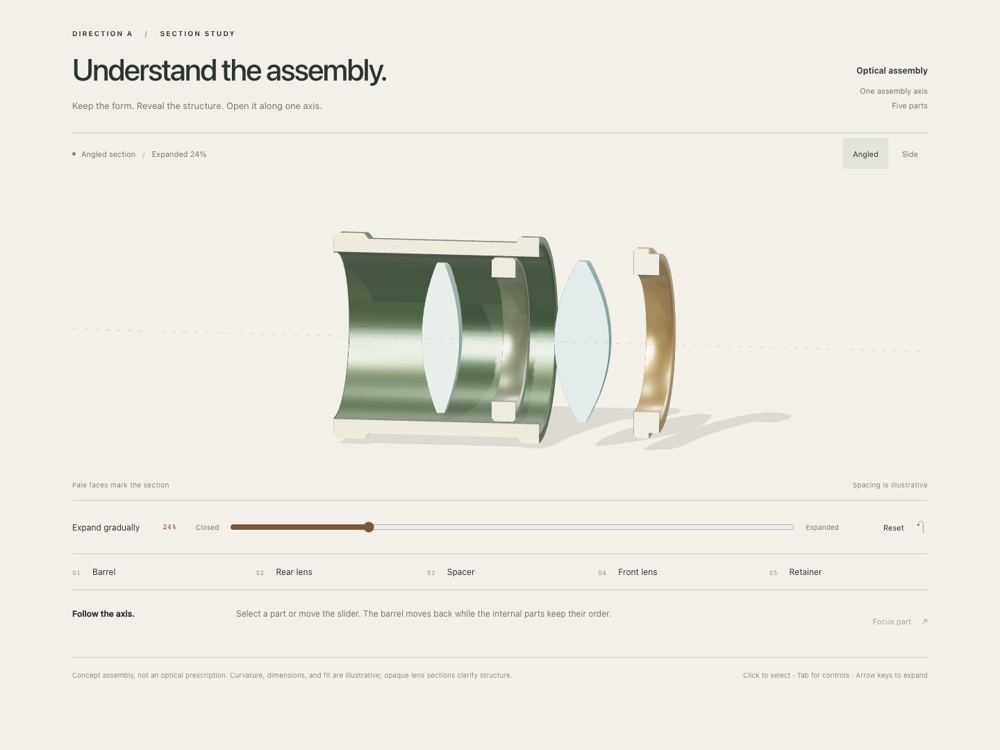
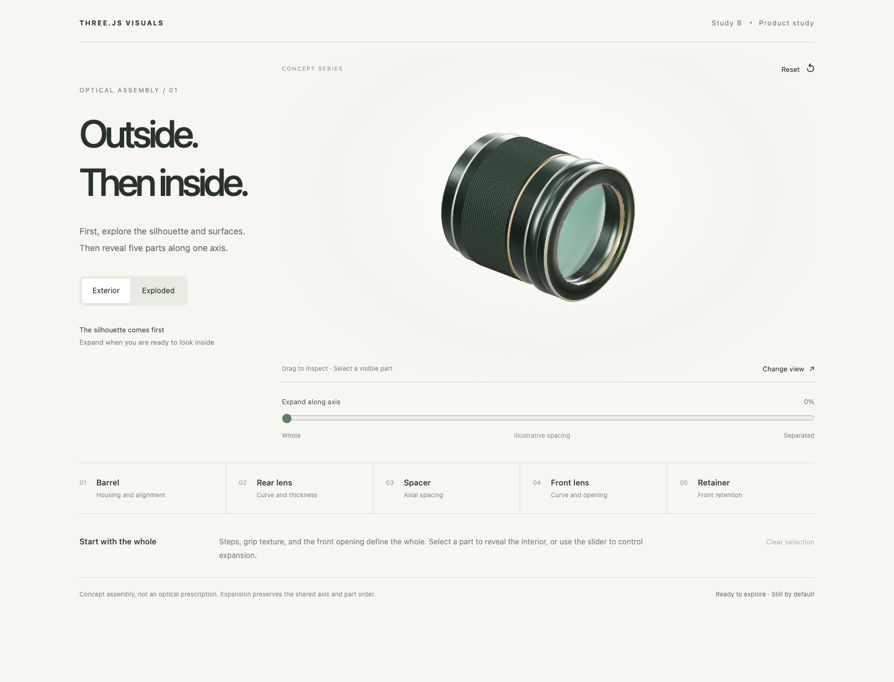

THREE.JS VISUALS / DIRECTION STUDIESOne assembly. Two ways to explore.
Two studies share five optical parts, one assembly axis, and the same accuracy constraints. Try each, then choose the approach that suits your page.

A · Read the assembly through a section
See internal relationships immediately. An orthographic view and clear cut faces support gradual expansion; fixed viewing angles preserve orientation.
- Best for
- Technical articles and assembly teaching where structure should be clear at first glance.
- Tradeoff
- The section does not show the complete exterior. Glass refraction is not simulated.
Try study A ↗
B · Explore inside from the exterior
Begin with the complete silhouette and surface detail, then expand on demand. Drag to inspect or use mode buttons and keyboard-accessible views.
- Best for
- Product pages and presentations that introduce appearance before exploring structure.
- Tradeoff
- Internal relationships require expansion. The camera allows more freedom.
Try study B ↗Recommendation: Choose A to explain assembly, or B to present a product and invite exploration. Materials and controls can be refined after choosing. These are comparison candidates, not an approved final design.
Both are conceptual assemblies, not optical prescriptions. Spacing, curvature, and dimensions are illustrative. See each study for its verification limits.
Open the full interaction and fallback example